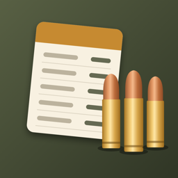

An inventory counter for your ammunition: set up the boxes and cases each type comes in, count them, and print or share a report.
Open a ticket on the support page on GitHub. Tell us your device, iOS version and what happened, and we'll get back to you.
How do I count? Add an ammo type, set up its containers (like Case = 1,000 or Box = 50), then tap the type and use − and + for each container. Tap a number to type it exactly.
How does scanning work? On the Scan tab, scan a box's barcode. The first time, pick which container it is; after that, every scan adds one.
What is Range Day? Start it from the ⋯ menu. While it's on, − takes a container out and logs it as used, and “Log Rounds Fired” takes any number of rounds, opening a box if needed. The total for the session shows on your Lock Screen.
How do locations work? Add them in Settings → Locations. Counts are kept per location, and you pick the location at the top of the Count and Scan screens.
How do lots work? In a type's Set Up, open Lots and Expiry. Rounds you use come out of the oldest lot first, and lots that are expired or expire within 90 days are listed on Inventory.
How do I make an insurance report? Add a photo to each type in Set Up, then choose Insurance Report from the ⋯ menu on Inventory or Report. It's a PDF with quantities, prices and the total value.
Does the Apple Watch app work on its own? It shows the inventory your iPhone last sent. Changes you make on the watch are sent to your iPhone when it's nearby.
How do I move to a new phone? Turn on iCloud Sync in Settings on both devices, or use Settings → Back Up to a File and then Restore from Backup.
The developer collects no data. Read the full privacy policy.